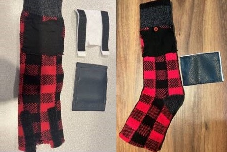
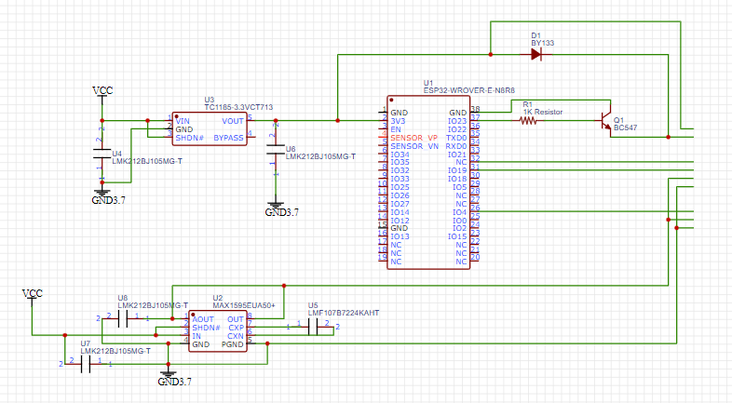

Mechanical
For the physical design we are using a polyester-based sock (heat
resistant and nonconductive material) as our base of the design
and have a cut for the pulse sensor as well as the GSR sensor
electrodes. The top strap (containing the electrical components)
is removable and attached with Velcro to allow for the rest of the
design to be washed. A rough prototype of the design has been made
for both feet.

Electrical
To minimize on space we've designed a PCB for our main circuit.
This week we ordered the surface mount electronic components and
have started testing the circuit with simple wiring to ensure
everything works.

Software
This week, we focused on connecting the main device via BLE
(high-speed bluetooth) technology to the smartphone app. We were
successful in polling and sending the sensor data to be displayed
and stored on the app. We also built the stress prediction code by
deploying and incorporating the previously trained ML model and
building the data pipeline taking json file as input. We are now
working on setting up the flask API for transmission of sensor
data from the app to the stress prediction code. We were
successful in sending the prediction results to the API.